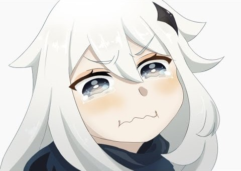

Gacha will ruin our lifus! You are not exception, Gamer.
You can click on image btw.
We've been:
- Tricked,
- Backstabbed,
- Quite Possibly, Bamboozled...
Read the article "I have a gacha game addiction..." for better understanding.
If you still have concerns then use the QR-code below please.